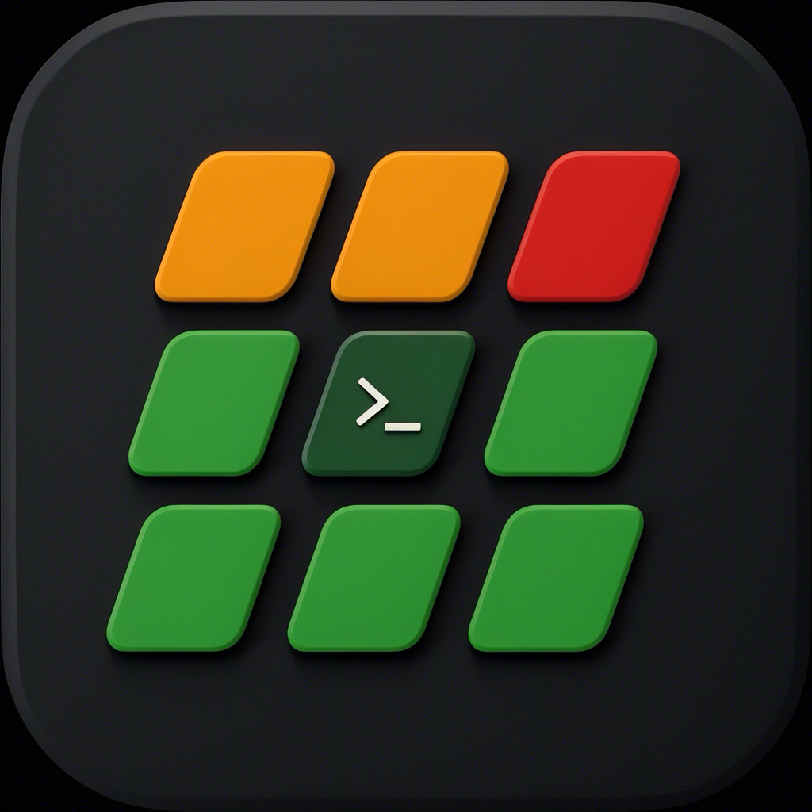
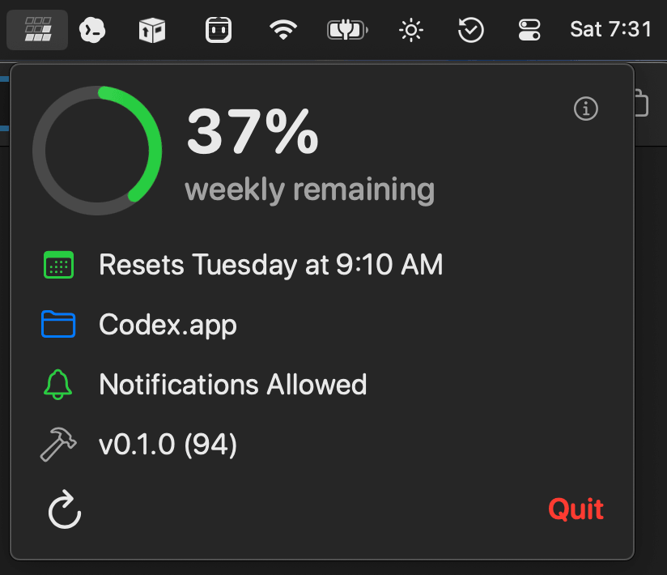

Glance once
The menu bar shows your remaining weekly Codex capacity without opening Codex or running a command.

Codex Weekly ResetNative macOS menu bar utility
A small, quiet status check for the thing heavy Codex users actually wonder about: remaining weekly capacity, when it resets, and whether it came back while you were doing something else.
codex app-server
The menu bar shows your remaining weekly Codex capacity without opening Codex or running a command.
macOS notifications tell you when capacity gets low, runs out, or comes back after a reset.
The app asks Codex for live rate-limit data. If that read fails, it says so instead of pretending.